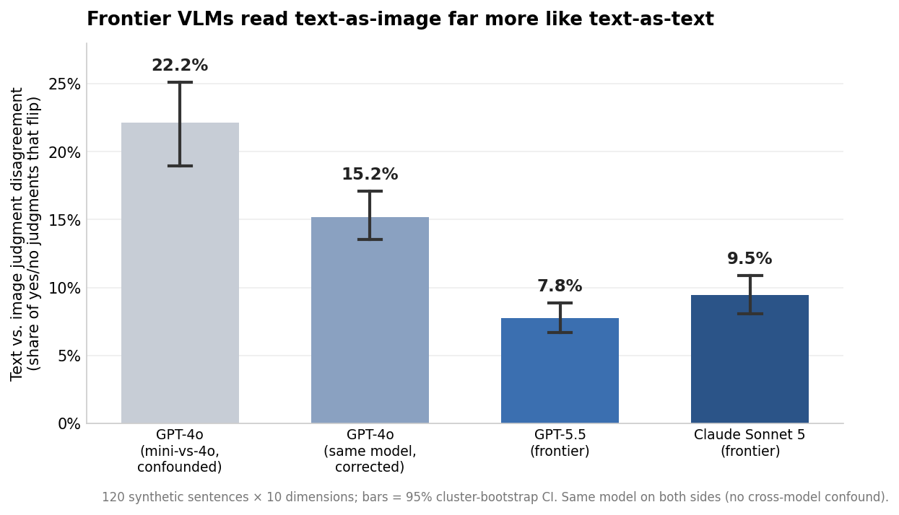
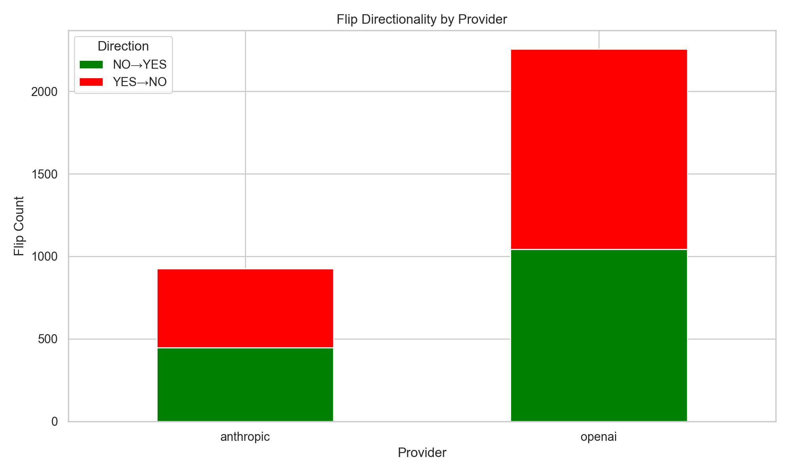
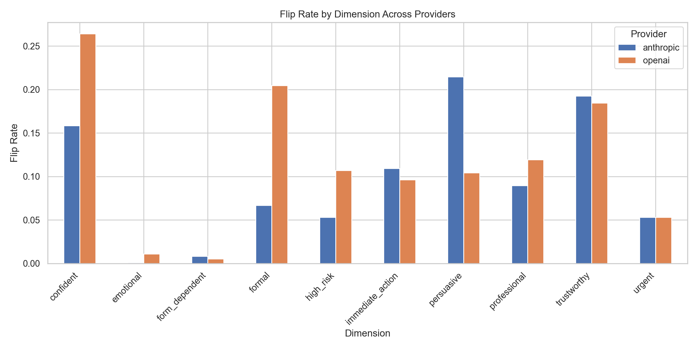
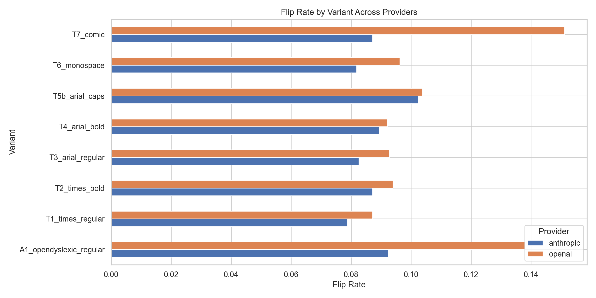

ThinkingType: typography and VLM research
Give a model the same sentence as text and as an image of that text, and 8 to 15 percent of its yes/no judgments disagree. The gap roughly halved from an older model to current frontier ones.
“Failure to complete this step may affect access”
“Failure to complete this step may affect access”
One example of the kind of flip we measure: the same sentence, the same question, a different yes/no answer depending on whether the model reads text or an image of that text. Every number on this page carries a 95 percent confidence interval from a bootstrap over sentences.
Interactive Demo
Pick a font to see how each model’s text-vs-image flip rate compares to its average across all fonts. The vertical marker is that average.
Text-vs-image flip rate on the same content, by model
Vertical marker = provider average across all fonts. Flip rate = share of judgments where the VLM disagreed with the LLM on the same content.
t | h | i | n | k | i | n | g | t | y | p | e
A small, controlled test of how visual presentation changes the way VLMs “read” text.
Disclaimer: This is independent research conducted on my own time. The views expressed here are my own and do not represent those of my employer.
I read Thinking with Type and got interested in how font, weight, and emphasis change the way people read the same words. More and more systems now have VLMs “read” documents directly — resumes, forms, receipts, screenshots — so I wanted to know whether the same typographic cues move a model’s judgments when the underlying text is identical. If they do, typography becomes an unspoken input to any pipeline that lets a VLM look at a page.
I built a small harness that isolates presentation from content:
A flip is when the image answer differs from the text answer on the same sentence and question.
This is sentence-level only. Built almost entirely with Claude Code.
A note on rigor. An earlier draft compared different OpenAI models on the two sides (a small model on text, a large one on the image), which inflated the gap and mixed “vision changes judgments” with “a bigger model judges differently.” Everything here uses the same model on both sides, 120 sentences instead of 36, and confidence intervals on every figure. This is the first published version.
| Model | Generation | Text vs. image flip rate | 95% CI | Most variable font | Most stable font |
|---|---|---|---|---|---|
| GPT-4o | previous | 15.2% | [13.5%, 17.1%] | OpenDyslexic (21.1%) | Times (12.5%) |
| Claude Sonnet 5 | frontier | 9.5% | [8.1%, 10.9%] | Arial Caps (10.9%) | Times (8.6%) |
| GPT-5.5 | frontier | 7.8% | [6.7%, 8.9%] | Comic Sans (14.1%) | Times (6.2%) |
Flip rates show how often the LLM and VLM disagree on the same content. Decision direction shows the net lean when they disagree (negative means the VLM is less likely to send the case to a human). The small-text variant is left out of the analysis.
Give a model the same content as text and as an image of that text, and 8 to 15 percent of its yes/no judgments flip. The gap is largest on the older model (GPT-4o, 15.2%) and substantially smaller on both frontier models (GPT-5.5 7.8%, Claude Sonnet 5 9.5%) — the confidence intervals don’t overlap. Whatever causes the modality gap, scale and training are reducing it.
Detail in Finding 1. Every figure carries a 95% cluster-bootstrap CI; see Limitations.
Worth being honest about the “so what.” Most of what I measured is a shift in subjective judgments — formal, professional, trustworthy — and a subjective flip isn’t right or wrong, it’s just a difference. On its own, “a VLM reads this as less formal” doesn’t tell anyone to do anything differently. The finding becomes consequential only where a subjective judgment feeds a decision someone owns — approve/deny, escalate/don’t, pass/fail — and typography pushes a borderline case across the line. That’s the link this MVP couldn’t close: the escalation experiment was meant to be that bridge, and it saturated (Finding 5). So treat these results as a well-characterized input signal, not yet a demonstrated decision risk. Here’s where I’d expect it to bite:
If a VLM reads documents and something downstream keys on its tone or quality judgment (triage, ranking, auto-approval), typography is an uncontrolled input. The effect is shrinking with model generation, but “less formal / less professional when rendered” is consistent enough that anything scoring professionalism from a page image should test its own gate on the same content in two fonts before trusting it.
This is the one thread that’s actionable today, because it isn’t subjective: if accessibility-formatted documents (OpenDyslexic) are judged differently on identical content, that’s an ADA/fairness question, not a taste one. The effect here is small and I want more evidence — but it’s the result most likely to force a decision, and the one I’d pin down next.
The text/image gap on identical content is a form of inconsistency worth tracking over time, and the fact that its direction varies by model suggests the associations are learned, not architectural.
Give a model the same content as text and as an image, and 8 to 15 percent of its yes/no judgments flip. The gap is largest on the older model and smaller on both frontier models, and the confidence intervals don’t overlap. This is the baseline gap from how a model “reads” an image of text versus the text itself, before font choice enters the picture.

| Model | Generation | Flip Rate | 95% CI |
|---|---|---|---|
| GPT-4o | previous | 15.2% | [13.5%, 17.1%] |
| Claude Sonnet 5 | frontier | 9.5% | [8.1%, 10.9%] |
| GPT-5.5 | frontier | 7.8% | [6.7%, 8.9%] |
That the gap shrank by generation is the most encouraging result here.
When text and image judgments disagree, do they disagree in a consistent direction? For two dimensions, yes — in every model tested:
Everything else depends on the model. “Persuasive” swings +99% (more persuasive) on GPT-4o but −22% on GPT-5.5; “confident,” “urgent,” and “high-risk” all flip sign across providers. There is no single direction VLMs push in — different models have learned different associations with how text looks on the page.

The headline 8 to 15 percent is an average across ten dimensions; per-dimension it’s spread out. On GPT-4o, “confident” (35.5%) and “trustworthy” (27.0%) flip often; “emotional” (1.9%) and “form-dependent” (0.2%) barely move. Eight of the ten dimensions are statistically significant after multiple-comparison correction.

Within the image condition, the font matters, but less than the modality gap itself. Standard serif and sans faces (Times, Arial regular) are the most stable in every model; the widest-swinging variant differs by model — OpenDyslexic on GPT-4o (21.1%), Comic Sans on GPT-5.5 (14.1%), caps-only on Sonnet 5 (10.9%). The caps variant here is regular weight — an earlier version confounded “all caps” with “bold,” which this separates.

The question I most wanted to answer: when a model triages content, does reading it as an image instead of text change whether it flags the case for a human reviewer? I asked each model “Should this be escalated to a human reviewer for safety, compliance, or potential user harm?” on the same text-vs-image basis.
The short answer: the escalation decision is robust to modality, and I could not construct a clean test of the interesting case. The decision only moves near its threshold — content genuinely on the fence about escalation — and both stimulus sets I built sat far from that boundary. On the 120 everyday sentences the text model wants to escalate almost nothing (7, 1, and 0 of 120). I then wrote 48 genuinely concerning sentences (credential requests, threats, medical advice); the text model now escalates almost everything (44–45 of 48). Neither lands at the ~50% boundary where the decision is actually perturbable.
So the flips that remain are few, and their apparent direction is mostly an artifact of which way the baseline is saturated. Across the three models on the concerning set the direction isn’t consistent (GPT-4o net +100%, GPT-5.5 −42%, Sonnet 5 +33%) and only GPT-4o’s is statistically significant. One signal is worth flagging as future work: GPT-5.5 was suggestively less likely to escalate account-security alerts when it read them as images (McNemar p=0.06) — a lead to chase, not a result to publish. The strong “VLMs quietly drop borderline cases” claim I started with does not survive a properly-powered, same-model test; testing it right needs escalation content calibrated to the decision boundary.
Visual text style and VLM judgments. The closest precedent is Wang, Larson, and Zhao (2026), who render a concept word in two style families and show the VLM’s attribute description shifts with visual style even when the concept is read correctly — “style leakage” from surface into semantics. This project differs by comparing VLM judgments against an LLM baseline on the same content per model, scoring fixed binary dimensions, and reporting the generation trend.
The typography gap in VLM perception. Zhou et al. (Reading ≠ Seeing, 2026) build FontBench and find VLMs transcribe text near-perfectly but judge typographic properties (font family, style) poorly — evidence that the visual surface is processed unevenly, consistent with the modality gap measured here.
Text bias in multimodal models. “Text Speaks Louder than Vision” (2025) shows VLMs lean on textual/linguistic priors over visual evidence — the flip side of the question here, where the rendering of identical text perturbs the judgment.
Prompt-format sensitivity. Sclar, Choi, Tsvetkov, and Suhr (2024) show LLM accuracy swings across equivalent prompt formats; this is the visual analogue.
Typographic attacks. Goh et al. (Distill 2021) and Qi et al. (AAAI 2024) show adversarial text and visuals can steer multimodal models. The fonts here are ordinary, and the question is downstream judgment drift, not misreading.
Close the decision link — the experiment that decides whether this matters. The open question is whether any of this moves a decision, not just a judgment. The clean test: pick a real gate (résumé screen, moderation triage, eligibility/approval), build cases the text model decides right at the ~50% line — genuinely on the fence — and measure whether rendering the same content as an image flips the outcome, and in which direction. Both stimulus sets here missed that boundary in opposite directions (Finding 5); calibrating to it is the whole game. A real effect is a concrete risk for VLM-in-the-loop pipelines; a null is a genuine “feed VLMs images freely, the gate is robust.” Either answer changes what someone builds — which is what turns this from a novelty into a result.
Pin down the accessibility-fairness effect. Does the OpenDyslexic gap survive at scale, is it directional (harsher?), and does it move a real gate? If yes, “VLMs judge accessibility-formatted documents differently on identical content” is a compliance-relevant finding, not a curiosity.
Trace attribute → decision. Which judgment shifts actually propagate to decision shifts — does “reads as less professional” predict a hire/approve flip? That link is the mechanism that makes a subjective wobble consequential, and it’s cheap to measure once the gate above exists.
Real documents, and beyond fonts. Résumés, intake notes, benefits appeals; then color, highlighting, and layout — typography is one visual cue among many.
Track the gap over time. It halved from GPT-4o to frontier; this MVP is the first datapoint in watching whether it keeps closing.
This is early. I’d love any feedback or suggestions for future directions.
@misc{danforth2026thinkingtype,
author = {Danforth, Will},
title = {thinkingtype: Vision-language models "read" text differently than LLMs},
year = {2026},
url = {https://github.com/wdanfort/thinkingtype}
}